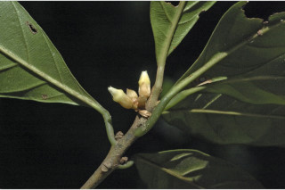
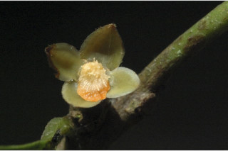
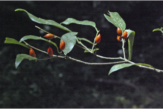
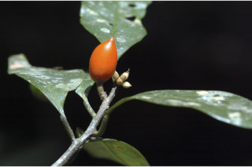
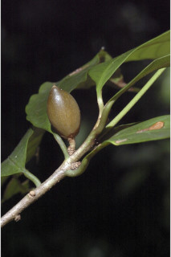
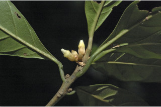
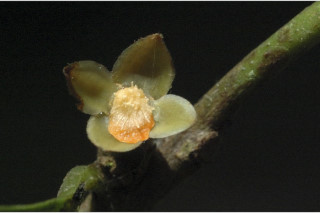
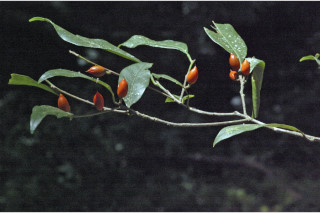
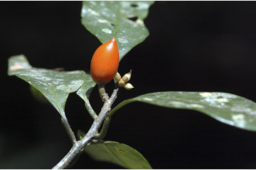
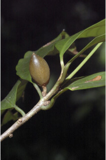

Small trees up to 5 m tall.
5 ಮೀ ಎತ್ತರದವರೆಗಿನ ಸಣ್ಣ ಗಾತ್ರದ ಮರಗಳು.
Small trees up to 5 m tall.
சிறிய மரம் 5 மீ. உயரம் வரை வளரக்கூடியது.
Young branchlets terete, fulvous pubescent when young, later glabrous.
ಕಿರುಕೊಂಬೆಗಳು ದುಂಡಾಗಿದ್ದು ಎಳೆಯದಾಗಿದ್ದಾಗ ನಸುಗೆಂಪಿನಿಂದ ಕೂಡಿದ ಹಳದಿ ಬಣ್ಣದ ಮೃದು ತುಪ್ಪಳದಿಂದ ಕೂಡಿದ್ದು ನಂತರ ರೋಮರಹಿತವಾಗುತ್ತವೆ.
Young branchlets terete, fulvous pubescent when young, later glabrous.
சிறியநுனிக்கிளைகள் குறுக்குவெட்டுத் தோற்றத்தில் வளையமானது, இளம்பருவத்தில் உரோமங்களுடையது, முதிரும் போது உரோமங்களற்றது.
Latex milky white, profuse.
ಸಸ್ಯ ಕ್ಷೀರ ಹಾಲಿನ ಬಿಳಿ ಬಣ್ಣ ಹೊಂದಿದ್ದು ವಿಫುಲವಾಗಿರುತ್ತದೆ.
Latex milky white, profuse.
வெள்ளை நிற பால் அதிகளவு சுரக்கிறது.
Leaves simple, alternate, spiral; petiole 0.6-1.2 cm, canaliculate glabrous; lamina 6-18 (-25) x 2-4.5 (-10) cm, narrow elliptic-oblong or oblanceolate, apex gradually long acuminate with blunt tip, base cuneate to attenuate, margin undulate, chartaceous or subcoriaceous; midrib raised above; secondary_nerves 8-13 pairs, nearly parallel; tertiary_nerves closely and horizontally percurrent.
ಎಲೆಗಳು ಸರಳವಾಗಿದ್ದು ಪರ್ಯಾಯ ಮತ್ತು ಸುತ್ತು ಜೋಡನಾ ವ್ಯವಸ್ಥೆಯಲ್ಲಿರುತ್ತವೆ; ತೊಟ್ಟು 0.6 – 1.2 ಸೆಂ.ಮೀ.ವರೆಗಿನ ಉದ್ದವಿದ್ದು, ಕಾಲುವೆಗೆರೆಯನ್ನು ಹೊಂದಿದ್ದು ರೋಮರಹಿತವಾಗಿರುತ್ತದೆ; ಪತ್ರಗಳು 6 -18(-25) X 2 –4. 5 ಸೆಂ.ಮೀ. ಗಾತ್ರ, ಸಂಕುಚಿತ ಅಂಡವೃತ್ತ ಅಥವಾ ಅಂಡವೃತ್ತ – ಬುಗುರಿಭರ್ಜಿಯ ಆಕಾರ ಹೊಂದಿದ್ದು, ಮೊಂಡಾಗ್ರವುಳ್ಳ ಬರಬರುತ್ತಾ ಉದ್ದವಾಗಿ,ಕ್ರಮೇಣ ಚೂಪಾಗುವ ಮಾದರಿಯ ತುದಿ, ಬೆಣೆಯಾಕಾರದಿಂದ ಒಳಬಾಗಿದ ಮಾದರಿವರೆಗಿನ ಬುಡ, ತರಂಗಿತವಾದ ಅಂಚು,ಕಾಗದ ಅಥವಾ ಉಪತೊಗಲನ್ನೋಲುವ ಮೇಲ್ಮೈ ಹೊಂದಿರುತ್ತವೆ;ಮಧ್ಯನಾಳ ಪತ್ರದ ಮೇಲ್ಭಾಗದಲ್ಲಿ ಮೇಲೆದ್ದಿರುತ್ತದೆ; ಎರಡನೇ ದರ್ಜೆಯ ನಾಳಗಳು 8 – 13 ಜೋಡಿಗಳಿದ್ದು ಹೆಚ್ಚೂ ಕಡಿಮೆ ಸಮಾಂತರದಲ್ಲಿರುತ್ತವೆ;ಮೂರನೇ ದರ್ಜೆಯ ನಾಳಗಳು ಕಡಿಮೆ ಅಂತರ ಹೊಂದಿದ್ದು ಲಂಬರೇಖೆಗೆ ಸಮಕೋನದಲ್ಲಿದ್ದು ಎಲೆ ದಿಂಡಿಗೆ ಅಡ್ಡವಾಗಿ ಕೂಡುತ್ತವೆ.
Leaves simple, alternate, spiral; petiole 0.6-1.2 cm, canaliculate glabrous; lamina 6-18 (-25) x 2-4.5 (-10) cm, narrow elliptic-oblong or oblanceolate, apex gradually long acuminate with blunt tip, base cuneate to attenuate, margin undulate, chartaceous or subcoriaceous; midrib raised above; secondary_nerves 8-13 pairs, nearly parallel; tertiary_nerves closely and horizontally percurrent.
இலைகள் தனித்தவை, மாற்றுஅடுக்கமானவை, சுழல் போன்று அமைந்தவை; இலைக்காம்பு 0.6-1.2 செ.மீ. நீளமானது, குறுக்குவெட்டுத் தோற்றத்தில் கேனாலிகுலேட், உரோமங்களற்றது; இலை அலகு 6-18 (-25) X 2-4.5 (-10) செ.மீ., குறுகிய நீள்வட்டம்-நீள்சதுர வடிவானது அல்லது தலைகீழ் ஈட்டி வடிவானது, அலகின் நுனி சீராக நீளமானது மற்றும் சிறிது அதிக்கூரியதுடன் அதன் முனை மழுங்கியது, அலகின் தளம் ஆப்பு வடிவானது முதல் அட்டனுவேட், அலகின் விளிம்பு அலை போன்றது, சார்ட்டோசியஸ் அல்லது சப்கோரியேசியஸ்; மையநரம்பு மேற்புறத்தில் அலகின் பரப்பைவிட உயர்ந்து இருக்கும்; இரண்டாம் நிலை நரம்புகள் 8-13 ஜோடிகள், கிட்டதட்ட இணையானவை; மூன்றாம் நிலை நரம்புகள் விளிம்பு நோக்கிய இணையான நெருக்கமான பெர்க்கரண்ட்.
Flowers cream, sessile, in axillary clusters.
ಹೂಗಳು ಕೆನೆ ಬಣ್ಣದಲ್ಲಿದ್ದು,ತೊಟ್ಟುರಹಿತವಾಗಿರುತ್ತವೆ ಮತ್ತು ಅಕ್ಷಾಕಂಕುಳಿನಲ್ಲಿನ ಗುಂಪುಗಳಲ್ಲಿರುತ್ತವೆ.
Flowers cream, sessile, in axillary clusters.
மலர்கள் கீரிம் நிறமானது, காம்பற்றது, இலைக்கோணங்களில் தொகுப்பாகமைந்தவை.
Berry red, elliptic to 0.7-1.5 cm long; seed one.
ಬೆರ್ರಿ ಕೆಂಪಾಗಿದ್ದು ಅಂಡವೃತ್ತದ ಆಕಾರ ಹೊಂದಿದ್ದು 0.7-1.5 ಸೆಂ.ಮೀ.ವರೆಗಿನ ಉದ್ದ ಹೊಂದಿರುತ್ತದೆ;ಬೀಜದ ಸಂಖ್ಯೆ 1.
Berry red, elliptic to 0.7-1.5 cm long; seed one.
முழுச்சதைகனி (பெர்ரி), சிவப்பு நிறமானது, நீள்வட்ட வடிவானது, 0.7-1.5 செ.மீ. நீளமானது; ஒர் விதையுடையது.
 








